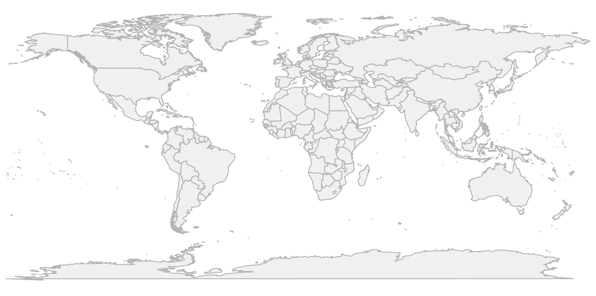
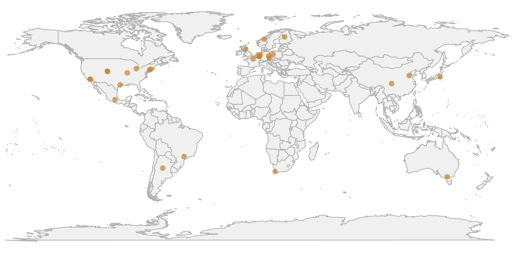
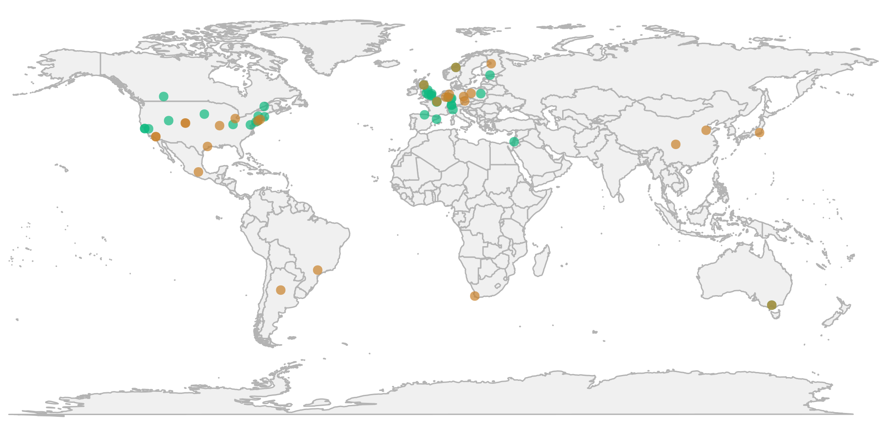
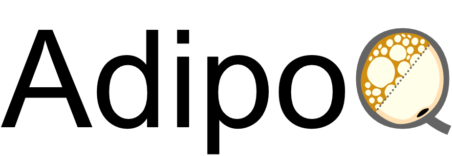
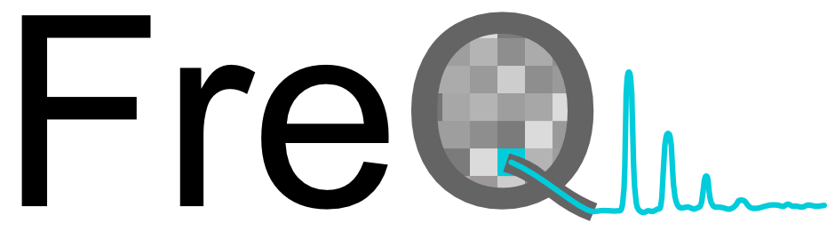

Open-source ImageJ/Fiji plugins developed for automated, reproducible image analysis.
Quantify ciliary shape, length, and fluorescence in 2D, 3D, and 4D images.
Quantify dynamics, morphology, and fluorescence of microglia (and other cells) in 2D/3D.

Quantify adipocyte morphology and function in tissue sections and in vitro.

Analyze pixel-intensity oscillations in time-lapse 2D images — e.g., ciliary beat frequency.
Comprehensively quantify the flagellar beat of sperm and sperm steering from time-lapse images.
Label-free 3D tracking of fast biological processes — including SpermQ-MF for multifocal flagellar analysis.